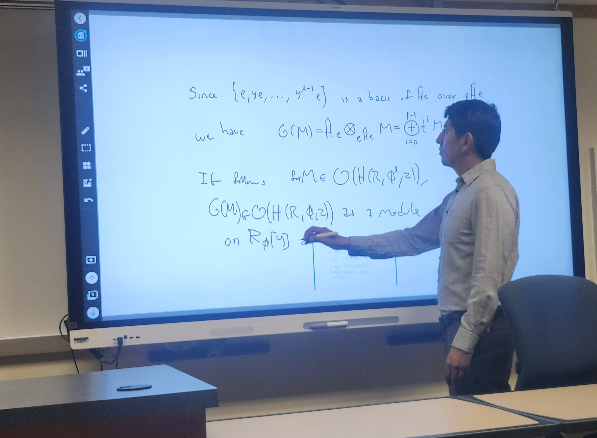
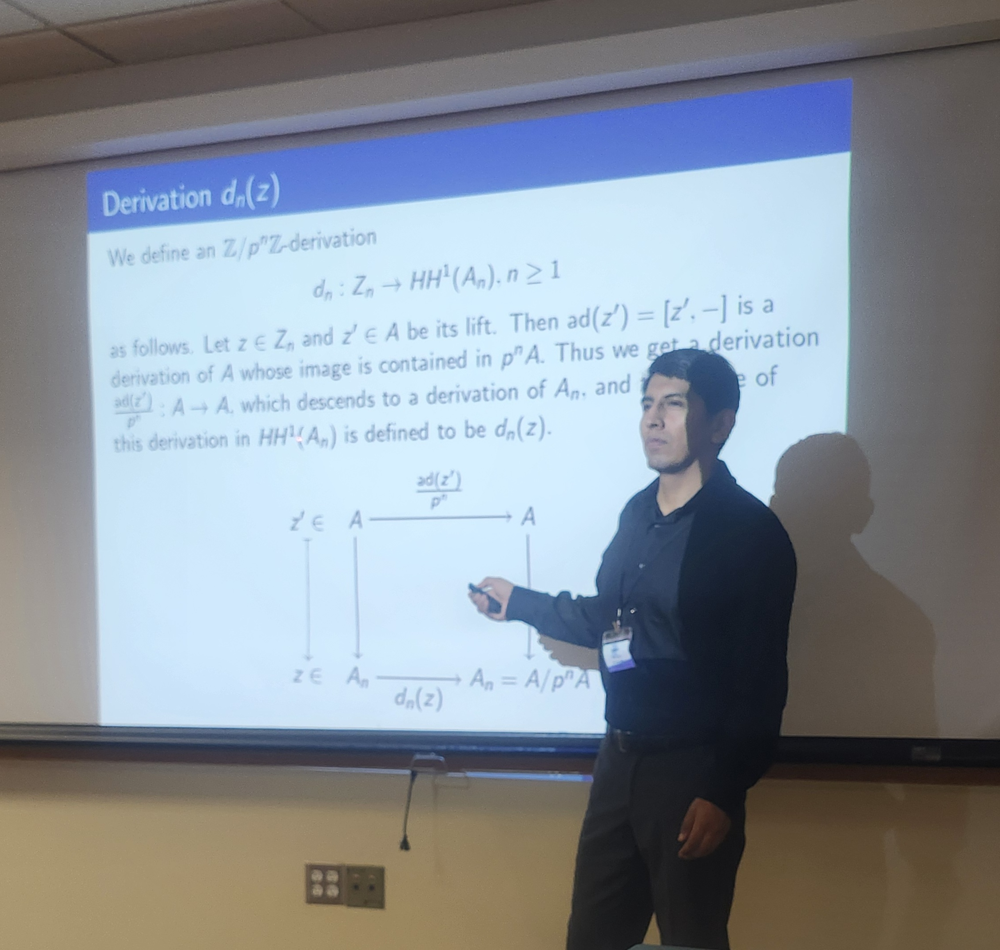
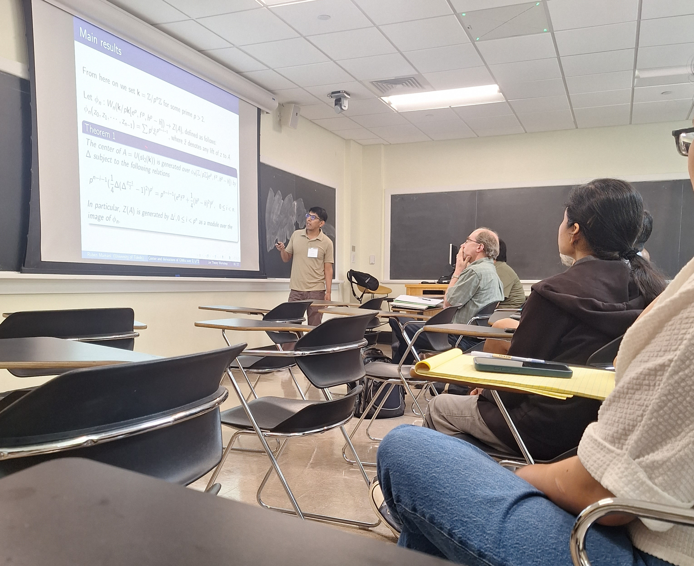

-
October 2026
Toledo, OhioSeminar TalkOn Cartier Descent for Generalized Weyl Algebras and Lattices over Weyl Algebras
Algebra Seminar
University of Toledo. -
October 2026
Ames, IowaSeminar TalkOn Cartier Descent for Generalized Weyl Algebras and Lattices over Weyl Algebras
Algebra and Geometry Seminar
Iowa State University. -
October 2026
Duluth, MinnesotaContributed TalkOn the category 𝒪 for generalized Weyl algebras
2026 Fall Central Sectional Meeting, AMS Special Session on Algebras and Representation Theory
University of Minnesota-Duluth. -
October 2026
Washington, DCContributed TalkOn the category 𝒪 for generalized Weyl algebras
2026 Fall Eastern Sectional Meeting, AMS Contributed Paper Session
George Washington University. -
September 2026
Toledo, OhioSeminar TalkLattices over the Weyl Algebra modulo ℤ/p²ℤ
Algebra Seminar
University of Toledo. -
September 2026
Cochabamba, Bolivia★ Invited TalkModules over the Weyl algebra over ℤ/p²ℤ
27th Bolivian Mathematics Congress (SOBOLMAT)
Universidad Simón I. Patiño, Cochabamba, Bolivia. -
July 2026
Charlottesville, VirginiaContributed TalkCenter and derivations of Generalized Weyl Algebras over ℤ/pⁿℤ
ICM 2026 Satellite Conference on Algebraic and Geometric Representation Theory
University of Virginia. -
June 2026
Toledo, Ohio⚡ Lightning TalkThe zeroth and first Hochschild cohomology of U(sl₂) over ℤ/pⁿℤ
Buckeye Metric Geometry Workshop II
University of Toledo. -
May 2026
Philadelphia, PennsylvaniaContributed TalkCenter and derivations of Generalized Weyl Algebras over ℤ/pⁿℤ
11th Annual Graduate Student Conference in Geometry, Topology, and Algebra
Temple University. -
April 2026
Toledo, OhioSeminar TalkCenter and derivations of Generalized Weyl Algebras over ℤ/pⁿℤ
Algebra Seminar
University of Toledo. -
March 2025
Toledo, OhioSeminar TalkOn the category 𝒪 for generalized Weyl algebras
Algebra Seminar
University of Toledo. -
April 2024
Toledo, OhioSeminar TalkGrothendieck Theorem
Algebra Seminar
University of Toledo.
-
Summer Workshop on Making your course material meet the requirements of the new ADA digital accessibility requirement (Introduction to PreTeXt)
MAA Ohio Section · Online · June 23–25, 2026.


